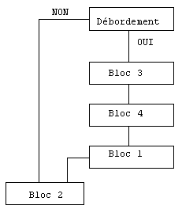

Dans notre exemple d'état, le corps du programme Diva ne contient qu'une boucle de lecture et d'impression du bloc détail numéro 2 :
Loop Hread (Fcomp,Cpenr) ;boucle de lecture et impression
Xmiprint Harmony.Imasque 2 ;des blocs détail
Endloop
Or, le pied de page est imprimé en bas de chaque page ; l'en-tête de page est lui-aussi réimprimé en haut de la deuxième page et des pages suivantes.
Ceci s'obtient par un mécanisme d'enchaînement automatique de blocs.
On distingue deux types d'enchaînement :
Le chaînage forcé, qui impose l'impression d'un bloc (dit bloc de chaînage ou bloc chaîné) après celle du bloc courant.
Le chaînage en cas de débordement, qui intervient lorsque la place manque dans la page ou le tableau pour imprimer le bloc mobile courant.
Dans ce cas, un bloc (dit bloc de débordement) est imprimé avant le bloc courant. Le cas échéant, l'impression du bloc de débordement peut être suivie de celle d'un ou plusieurs blocs chaînés (en cascade). Enfin, le bloc de départ est imprimé sur une nouvelle page (*).
Si le traitement du débordement est identique, sa détection dépend du type du bloc mobile. Un débordement a lieu lorsque la ligne imprimée courante dépasse la borne de fin d'impression du bloc (Position fin) :
Si le bloc est de type Mobile, cette borne est relative à la page.
Si le bloc est de type Tableau, cette borne est relative au corps du tableau.
(*) Le passage à la page suivante est commandé par l'option "Saut avant" ou "Saut après", qu'on activera au niveau du bloc de débordement ou d'un bloc de chaînage.
Dans notre exemple (avec un bloc détail de type Mobile), nous voyons ces deux types d'enchaînement :
Chaînages forcés : le bloc 3 (récapitulatif) enchaîne au bloc 4 (pied de la page courante), qui lui-même enchaîne au bloc 1 (en-tête de la page suivante). Le saut de page est paramétré dans les caractéristiques du bloc 4 (case à cocher Saut après).
Débordement : l'impression du bloc 2 (détail) est limitée à la Position fin -5 (soit 61). Après son impression en ligne 61, il y a débordement et le bloc de débordement 3 (récapitulatif) est imprimé. Voici le diagramme montrant le traitement de la commande d'impression du bloc 2 :

Remarque importante :
Le mécanisme d'enchaînement automatique de blocs ne prend pas en charge l'impression du tout premier bloc d'en-tête ni celle des tous derniers blocs récapitulatif et pied de page. Ces trois impressions doivent être explicitement commandées par le programme Diva. Dans notre exemple :
Xmiprint Harmony.Imasque 1 ;premier bloc d'en-tête
...
;dernier bas de page :
Xmiprint1 Harmony.Imasque 3 0 \ ;récapitulatif final
Harmony.Ideborde \
Harmony.IsautAvant \
Harmony.IsautApres
Xmiprint Harmony.Imasque 4 ;pied
Pour imprimer le dernier bloc 3, le programme demande au gestionnaire de masque Ymig de stopper le mécanisme des enchaînements automatiques forcés. Si ce n'était pas le cas, l'édition se terminerait toujours par le bloc 1 d'en-tête de page.
Le "Traitement Après" associé à un bloc peut être utilisé pour demander l'impression d'un bloc supplémentaire. Cette fonctionnalité permet, en particulier en surcharge, d'ajouter un bloc au bloc courant par programme.